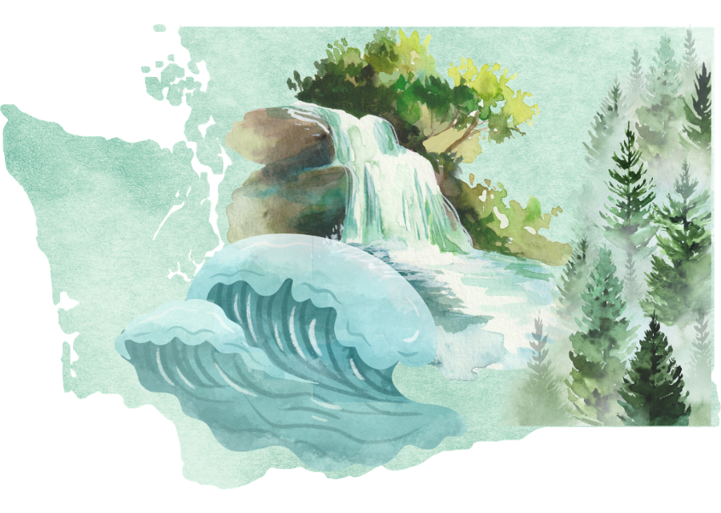
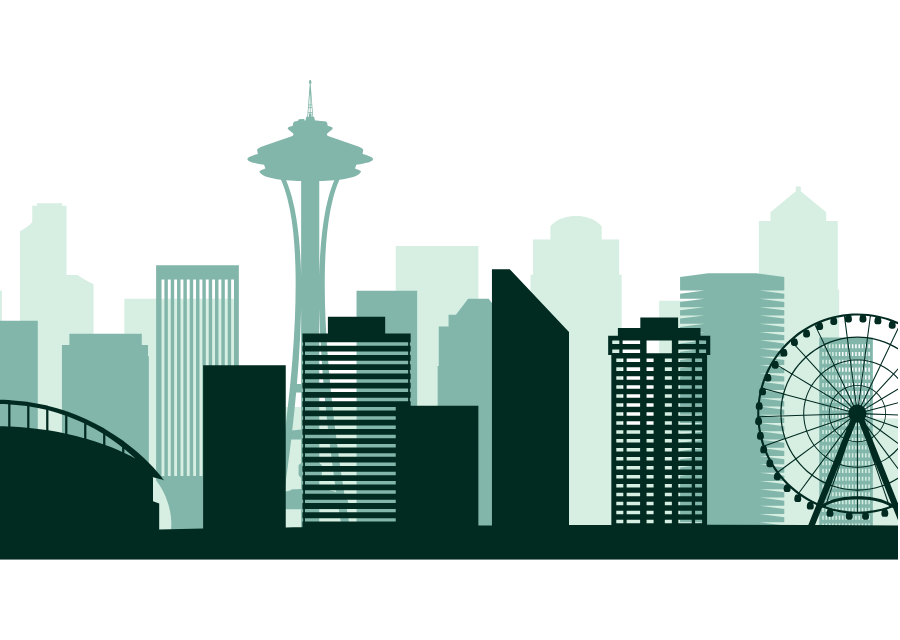
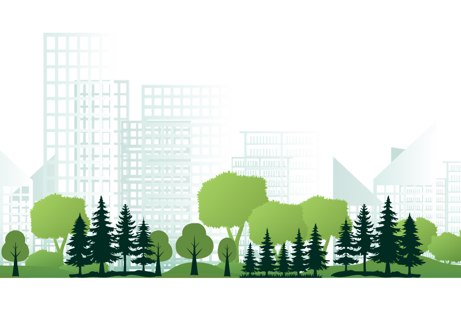

Welcome to Washington
Known as the Evergreen State, Washington is located in the Pacific Northwest and is recognized for its thriving cities, diverse landscapes, and rich history. From the state capital of Olympia to the innovation of Seattle and Bellevue's vibrant downtown, Washington offers visitors a unique blend of culture, government, technology, and outdoor recreation.
Explore our cities
Olympia
Discover Washington's capital, known for its government institutions, waterfront parks, Indigenous heritage, and annual salmon run.
Explore >>
Seattle
Explore Washington's largest city, famous for innovation, iconic landmarks, waterfront neighborhoods, and a vibrant arts scene.
Explore >>
Bellevue
Experience Bellevue, where a modern skyline, thriving business district, public parks, and wooded trails create a unique urban destination.
Explore >>